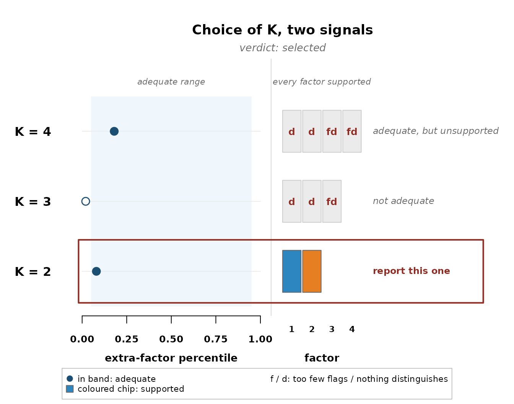

Two rules sit behind everything the package reports.
claims() decides what a fitted model may report, and
select_k() decides how many factors to fit at all. This
article works through both.
One rule for every claim
A candidate claim is anything the analysis might report. A flag, a distinguishing statement, a consensus statement, a pairwise star. Each carries a posterior probability, and the rule is the same for all four kinds. Rank the candidates by probability, add them from the top, and stop when the expected share of false claims among those added passes the level q. Every claim short of probability one contributes its shortfall, so the expected number of false claims is the sum of one minus the probability across the selected claims, and the table reports that number next to the count.
The demonstration fit makes the arithmetic visible. Its strongest flag candidates:
fit <- demo_fit(seed = 1)
fl <- compute_flags(fit)
head(fl[order(-fl$flag_prob), c("participant", "factor", "flag_prob")], 5)
#> participant factor flag_prob
#> 5 P5 f1 0.895
#> 3 P3 f1 0.875
#> 1 P1 f1 0.840
#> 2 P2 f2 0.795
#> 7 P7 f1 0.785At q = 0.05 none of these probabilities is high enough. Even the strongest candidate would put the expected false share past five percent on its own, so the rule reports nothing rather than something it cannot stand behind.
claims(fit, q = 0.05)
#> Selected claims at q = 0.05 (posterior expected FDR):
#> flags 0 participants selected (expected false 0.00)
#> distinguishing 5 listings selected (expected false 0.25)
#> consensus 0 statements selected (expected false 0.00)
#> stars 2 pairwise selected (expected false 0.08)Loosen the level and the rule starts admitting candidates, stating the expected number of false claims it now carries.
claims(fit, q = 0.25)
#> Selected claims at q = 0.25 (posterior expected FDR):
#> flags 6 participants selected (expected false 1.06)
#> distinguishing 9 listings selected (expected false 1.88)
#> consensus 0 statements selected (expected false 0.00)
#> stars 4 pairwise selected (expected false 0.62)That is the whole mechanism. The level q is the only setting, and the expected number of false claims is what it controls.
Two checks for the number of factors
fit_ladder() fits every candidate K and
select_k() reads each fit twice. The adequacy check asks
whether K factors account for the shared structure, judged by where the
next unused eigenvalue falls against the model’s own replications, with
a warning when the person check finds a cluster of sorters no factor
spans. The support check asks whether every factor earns its place, at
least two selected flags and at least one selected distinguishing
statement. The selected K is the smallest candidate that passes
both.
On a simulated panel with two planted viewpoints, the decision looks like this:
sim <- generate_data(N = 14, J = 20, K = 2, noise_sd = 0.6,
primary_range = c(0.65, 0.9), seed = 7)
qdata <- qsort_data(sim$Y, distribution = sim$distribution)
lad <- fit_ladder(qdata, K_min = 2, K_max = 4, seed = 7, quiet = TRUE)
plot_choice_k(select_k(lad))
Each row ends with its own verdict. K = 4 is adequate but two of its factors attract nothing, K = 3 fails the adequacy check, and K = 2 passes both, so it is boxed and named.
When no row passes both checks, the rule refuses to select and names what it sees instead. A panel whose flags pile onto one factor while no statement separates any pair reads as a single viewpoint, the verdict the childhood obesity panel receives in its walkthrough. A panel where no factor attracts even two flags reads as no shared structure. On the grizzly bear panel, the package’s second shipped dataset, the same standard resolves the other way, K = 2 passes both checks and the rule selects two viewpoints. And when adequacy and support each hold somewhere but never together, the verdict is tension, an instruction to look at the rows and make the choice openly.
A refusal is a finding. The data can support fewer viewpoints than the analyst hoped, the rules let that outcome through, and that is what makes the solutions they do select worth believing.